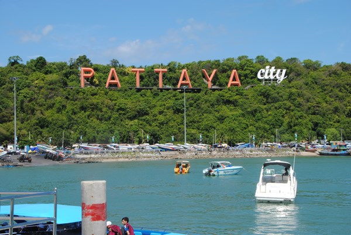

|  | ||||||||
MENU
|
หาดพัทยาความยาวประมาณ 3 กิโลเมตรเศษ มีถนนเลียบชายหาดที่ร่มรื่น ชายหาดทางด้านเหนือเป็นบริเวณที่ค่อนข้างเงียบสงบ นักท่องเที่ยวนิยมไปเล่นน้ำนั่งพักผ่อนชายหาดที่มีชื่อเสียงมากที่สุดของเมืองพัทยา และเป็นเหมือนศูนย์กลางกิจกรรมทางทะเลสำหรับผู้ที่มาพักผ่อนเลยก็ว่าได้ ไม่ว่าจะเป็นนอนอาบแดด เล่นกีฬาทางน้ำ สนุกไปกับเครื่องร่อนพาราเซลล์ ซึ่งตลอดแนวชายหายาว 3 กิโลเมตรนั้น เรียงรายด้วยโรงแรม ร้านอาหาร และร้านจำหน่ายสินค้าที่ระลึก แต่ถ้าใครชอบบรรยากาศที่เงียบสงบ ผู้คนไม่พลุกพล่าน บริเวณทางด้านเหนือของหาดแห่งนี้น่าจะเป็นตัวเลือกที่ดีที่สุด
|
|||||||
แหล่งที่มาของข้อมูล :คลิ๊กที่นี่เป็นส่วนหนึ่งของรายวิชา การสร้างเว็บไซต์ รหัสวิชา 20204-2008 |
||||||||